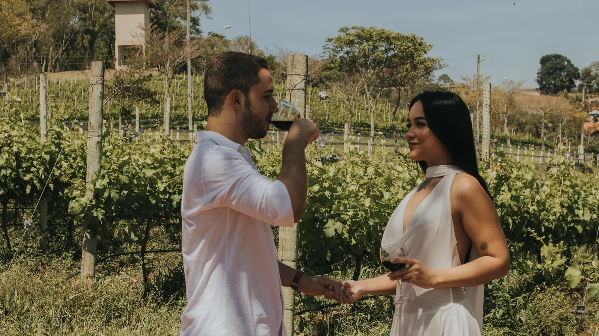
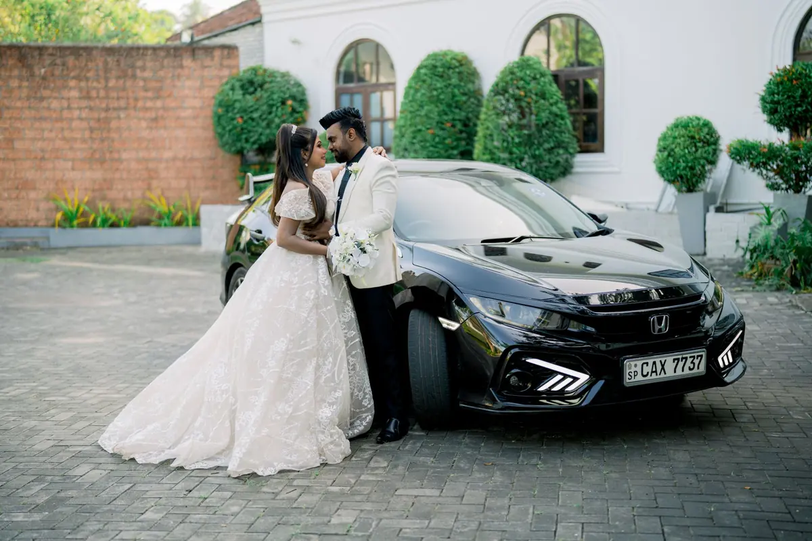

Chauffeur privé pour vos vignobles, mariages & soirées
Une voiture, un chauffeur qui attend, et personne qui conduit après la dégustation. À l'heure ou à la journée, prix convenu à l'avance.
- Journée 8 h
- Voiture des mariés
- Dès 65 €/h

Une journée à Saint-Émilion, sans les clés
La règle est simple : on ne conduit pas après la dégustation. Je vous prends à votre hôtel le matin, je vous attends à chaque château et je vous ramène le soir. Vos achats voyagent dans le coffre.
Saint-Émilion et ses côtes, la route des châteaux du Médoc jusqu'à Pauillac, ou Pessac-Léognan à vingt minutes du centre : je vous aide à composer une journée à votre rythme, avec les domaines qui vous ressemblent.
La vente d'alcool aux mineurs est interdite. L'abus d'alcool est dangereux pour la santé, à consommer avec modération.
Journée type · Saint-Émilion
Exemple d'itinéraire, ajustable
- Prise en charge à votre hôtel, Bordeaux
- Premier château, visite des chais
- Déjeuner dans la cité médiévale
- Deuxième domaine, dégustation
- Temps libre, monolithe et remparts
- Retour à Bordeaux, dépose à l'hôtel
Le jour J, une voiture de moins à penser

Mairie, église, domaine de réception : je conduis les mariés d'un lieu à l'autre selon le planning de la journée, avec un temps d'avance à chaque étape. Voiture décorée sur demande — rubans et fleurs fixés sans adhésif, pour ne rien abîmer.
Pour vos invités, j'organise des navettes avec des confrères VTC : aller au château, retour à Bordeaux en fin de soirée, par rotations. Un seul planning, un seul interlocuteur, et personne sur la route après le vin d'honneur.
- Repérage des lieux et timing validés ensemble
- Chauffeur en costume, berline noire hybride
- Eau fraîche et mouchoirs à bord (on ne sait jamais)
Matmut Atlantique, Arkéa Arena : le retour est réglé
À la sortie d'un concert ou d'un match, trouver un taxi relève de l'exploit. Réservez l'aller et le retour : je vous dépose au plus près de l'entrée et je vous récupère à un point convenu, à l'heure de votre choix.
Même principe pour un dîner au Grand Théâtre, une soirée aux Bassins à flot ou un gala d'entreprise au Hangar 14.
Mise à disposition
Prix TTC par véhicule, kilométrage inclus en Gironde. Conditions et majorations.
| Formule | Prix |
|---|---|
| Mise à disposition à l'heure | 65 €/h |
| Demi-journée vignobles (Pessac-Léognan, Médoc sud) | 260 € |
| Journée vignobles (Saint-Émilion, Médoc) | 480 € |
| Forfait mariage, voiture des mariés | 350 € |
| Aller-retour concert (Matmut Atlantique, Arkéa Arena) | 70 € |
| Navettes invités, plusieurs véhicules | sur devis |
Avant de réserver votre journée
Le chauffeur attend-il pendant les visites et le déjeuner ?
Oui, c'est le principe de la mise à disposition : la voiture et le chauffeur restent avec vous toute la journée. Vous laissez vos affaires à bord et vous repartez quand vous le souhaitez.
Pouvez-vous réserver les visites de châteaux ?
Je vous conseille des domaines selon vos goûts et je peux appeler pour vérifier les disponibilités. Les visites et dégustations restent réservées à votre nom et réglées directement aux châteaux.
Combien de voitures faut-il pour un mariage ?
Une berline suffit pour les mariés et les témoins. Pour les navettes d'invités, je coordonne plusieurs véhicules avec des confrères VTC de confiance, avec un planning unique et un seul interlocuteur : moi.
Composons votre journée
Dites-moi la date, le nombre de personnes et vos envies : je vous propose un itinéraire et un prix ferme.
- Réponse en moins de 30 min
- Prix fixe TTC
- 7 j/7 · 24 h/24